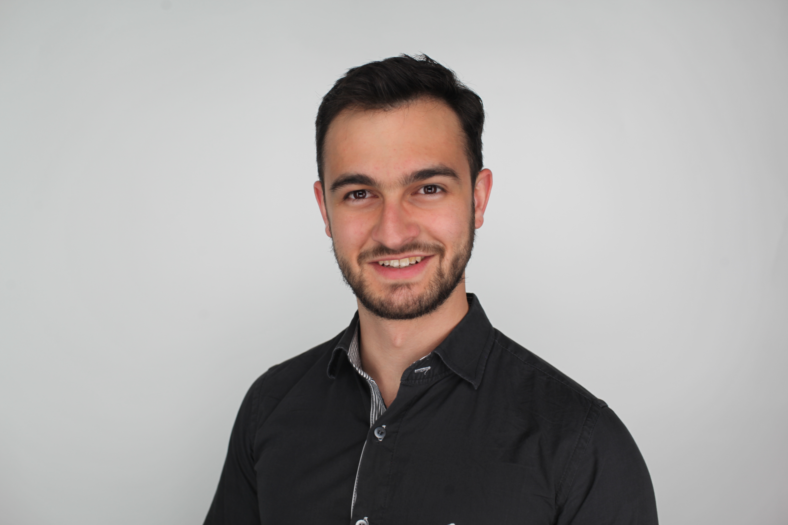

Joao Basso

I'm currently an AI resident at Google. I work on the Google Quantum AI algorithms team under the mentorship of Prof. Edward Farhi and Dr. Dave Bacon.
I graduated from Tufts University in 2020 with degrees in math,
physics and computer science. During that time, I did research with Professors
Loring Tu,
Michele Mosca
and Cristian Staii.
Most recent research interests: algorithms, quantum optimization.
One of my hobbies is playing the violin. I'm currently a member of the LA Doctor's Symphony Orchestra.
CV (last updated: 12/18/2021)
LinkedIn profile
Email: joao dot vensi underscore basso at tufts dot edu
Publications and preprints
For citations and other metrics, check my Google Scholar profile.
- Performance and limitations of the QAOA at constant levels on large sparse hypergraphs and spin glass models, J. Basso, D. Gamarnik, S. Mei, L. Zhou (2022)
- The Quantum Approximate Optimization Algorithm at High Depth for MaxCut on Large-Girth Regular Graphs and the Sherrington-Kirkpatrick Model, J. Basso, E. Farhi, K. Marwaha, B. Villalonga, L. Zhou (2021) - Talk
- Time-Crystalline Eigenstate Order on a Quantum Processor, Google Quantum AI and Collaborators, Nature (2021)
- Information scrambling in quantum circuits, Google Quantum AI and Collaborators, Science (2021)
- Realizing topologically ordered states on a quantum processor, Google Quantum AI and Collaborators, Science (2021)
- Basis-free analysis of singular tuples and eigenpairs of tensors, J. Basso, L. Tu (2020)
- On speeding up factoring with quantum SAT solvers, M. Mosca, J. Basso, S. Verschoor, Nature Scientific Reports (2020)
- Neuron dynamics on directional surfaces, J. Basso, I. Yurchenko, M. Wiens, C. Staii, Soft Matter (2019)
- Anomalous diffusion for neuronal growth on surfaces with controlled geometries, I. Yurchenko, J. Basso, V. Syrotenko, C. Staii, PLoS One (2019)
- Role of geometrical cues in neuronal growth, J. Basso, I. Yurchenko, M. Simon, D. Rizzo, C. Staii, Physical Review E (2019)
- Neuronal dynamics on patterned substrates measured by fluorescence microscopy, J. Basso, M. Simon, C. Staii, MRS Communications (2018)